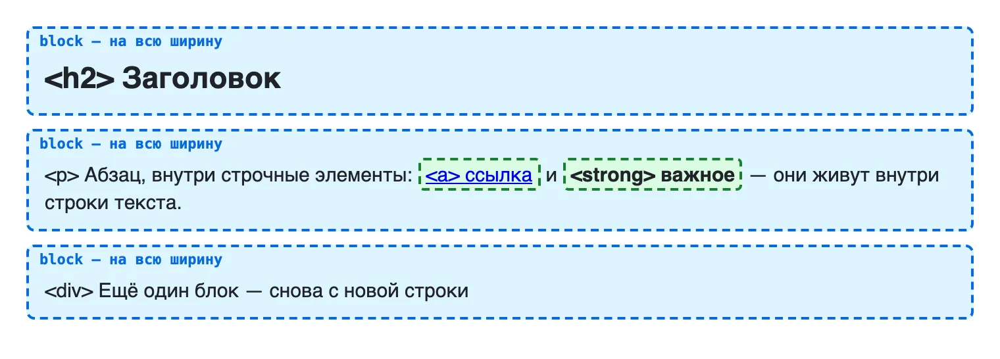
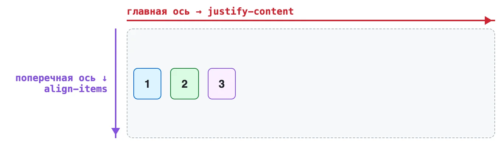
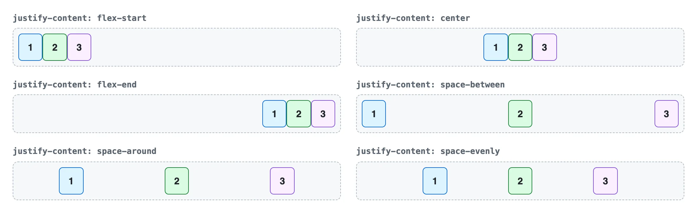
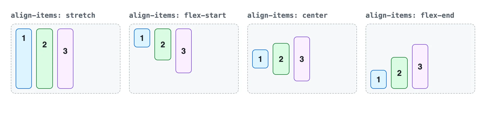
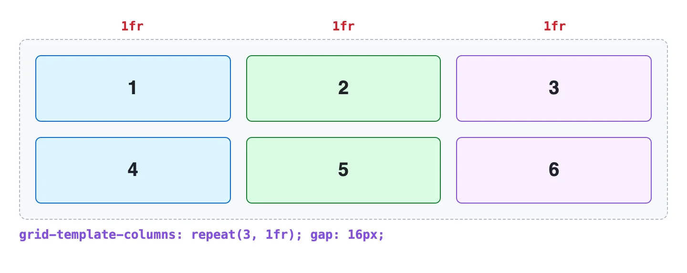

Модуль 1. HTML и CSS. Урок 7
Раскладка элементов на странице
Фронтенд с нуля
Две раскладки на все случаи: Flexbox — одна линия, Grid — сетка

| Значение | Что делает |
|---|---|
block |
новая строка, вся ширина |
inline |
в строку с текстом |
none |
исчезает |
flex |
дети в ряд |
grid |
дети в сетку |
.header {
display: flex;
justify-content: space-between;
align-items: center;
}display: flex — родителю, двигаются его дети



.screen {
display: flex;
justify-content: center;
align-items: center;
}| Свойство | Что делает |
|---|---|
gap: 16px |
промежутки между элементами |
flex-wrap: wrap |
перенос на новую строку |
flex: 1 |
занять свободное место |
margin-left: auto |
отодвинуть вправо |

.catalog {
display: grid;
grid-template-columns: repeat(auto-fill, minmax(220px, 1fr));
gap: 24px;
}Колонок столько, сколько влезет
.page {
display: grid;
grid-template-columns: 240px 1fr;
grid-template-areas:
"header header"
"aside main"
"footer footer";
}| Задача | Раскладка |
|---|---|
| Шапка, меню, кнопка с иконкой | Flexbox |
| Каталог, галерея | Grid |
| Макет страницы | Grid |
| По центру | любая |
display: flex не у того элемента